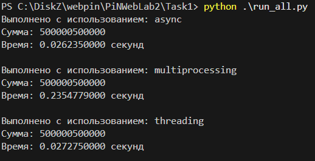
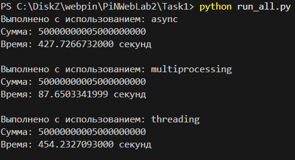

Задача 1. Различия между threading, multiprocessing и async в Python
Задача: Напишите три различных программы на Python, использующие каждый из подходов: threading, multiprocessing и async. Каждая программа должна решать считать сумму всех чисел от 1 до 10000000000000. Разделите вычисления на несколько параллельных задач для ускорения выполнения.
asyncio
import asyncio
from consts import MAX_NUMBER, NUM_TASKS
from utils import timer_decorator, get_end_index
async def calculate_sum(start, end):
total = 0
for i in range(start, end):
total += i
return total
async def main():
tasks = []
chunk_size = MAX_NUMBER // NUM_TASKS
@timer_decorator("async")
async def exec():
for i in range(NUM_TASKS):
start = i * chunk_size + 1
end = get_end_index(i, chunk_size, NUM_TASKS)
task = asyncio.create_task(calculate_sum(start, end))
tasks.append(task)
results = await asyncio.gather(*tasks)
return sum(results)
await exec()
if __name__ == "__main__":
asyncio.run(main())
multiprocessing
import multiprocessing
from consts import MAX_NUMBER, NUM_PROCESSES
from utils import timer_decorator, get_end_index
def calculate_sum(start, end, result_queue):
total = 0
for i in range(start, end):
total += i
result_queue.put(total)
def main():
processes = []
result_queue = multiprocessing.Queue()
chunk_size = MAX_NUMBER // NUM_PROCESSES
@timer_decorator("multiprocessing")
def exec():
for i in range(NUM_PROCESSES):
start = i * chunk_size + 1
end = get_end_index(i, chunk_size, NUM_PROCESSES)
process = multiprocessing.Process(target=calculate_sum, args=(start, end, result_queue))
processes.append(process)
for process in processes:
process.start()
for process in processes:
process.join()
total_sum = 0
while not result_queue.empty():
total_sum += result_queue.get()
return total_sum
exec()
if __name__ == "__main__":
main()
threading
import threading
from consts import MAX_NUMBER, NUM_THREADS
from utils import timer_decorator, get_end_index
def calculate_sum(start, end, result, index):
total = 0
for i in range(start, end):
total += i
result[index] = total
def main():
threads = []
result = [0] * NUM_THREADS
chunk_size = MAX_NUMBER // NUM_THREADS
@timer_decorator("threading")
def exec():
for i in range(NUM_THREADS):
start = i * chunk_size + 1
end = get_end_index(i, chunk_size, NUM_THREADS)
thread = threading.Thread(target=calculate_sum, args=(start, end, result, i))
threads.append(thread)
for thread in threads:
thread.start()
for thread in threads:
thread.join()
return sum(result)
exec()
if __name__ == "__main__":
main()
Результаты
Для 1 миллиона

Для 10 миллиардов

Вывод
Для интенсивных вычислений стоит использовать multiprocessing, так как он обходит GIL и позволяет задействовать все доступные ядра процессора, что можно заметить по картинке для 10 миллиардов. Но как видно для неинтенсивных вычислений стоит брать уже async или threading (разница по времени между ними небольшая), так как, видимо, очень много времени тратится для создания процесса, что можно заметить по картинке для 1 миллиона.